TIOTTA
Teaching Internet of Things
Through Application
My thesis for the Interaction Design Bachelor programme at Malmö University resulted in the creation of TIOTTA.
It stands for Teaching Internet of Things Through Application, and it is an educational platform. It includes
a digital learning platform, a physical computing setup and uses the Arduino IoT cloud service.
The aim with this thesis project was to teach industrial workers in Sweden to build IoT devices that could be implemented in their day-to-day work routine.
This page provides an overview of the project, described mainly in text.

The aim with this thesis project was to teach industrial workers in Sweden to build IoT devices that could be implemented in their day-to-day work routine.
This page provides an overview of the project, described mainly in text.
Motivation
My background working in industrial facilities and my increasing expertise in the field of IoT was the
catalysator
of this project. As technology rapidly develops, millions of jobs may be at stake in the near future, leaving
many people's
futures uncertain. People have always found a way to adapt to emerging technologies, as it has been evident in
the previous
industrial revolutions.

Design process
Pre-work
The project began by interviewing former participants in physical computing workshops. This helped shape an
understanding of certain pain points, and start questioning why these happened. This combined with my own
experiences of both attending and teaching similar workshops, helped form a new educational format that
could be tested with the industrial workers.
After analysing the interviews, the main insights were:
- Working with software and hardware simultaneously was overwhelming.
- Lack of a platform of content to return to during & after workshops.
- Failing to understand purpose of several electronic components.
First physical prototype
The first physical prototype was based on insights from previous participants in physical computing workshops.
It consisted of one brain unit (for connecting an Arduino board) and several sensor and actuator blocks. The
blocks could simply be plugged in to the brain unit, using molex connectors.
This reduced time spent on circuitry, and allowed more time to be spent on software.
First digital prototype
The first digital prototype was created as an apprehensive tutorial to learn the Arduino IoT Cloud, a service allowing
beginners to create devices that can be remotely controlled and monitored. The format consisted of five sections:
- Introduction
- Theory
- Preparation
- Building
- Testing
It was designed to accomodate the need of a content platform. This allowed users to prepare before workshops,
and to get back on track if getting lost somewhere on the way.
User testing
As this project was done during the CO-VID 19 pandemic, user tests in person were extremly limited.
Pre-work
The project began by interviewing former participants in physical computing workshops. This helped shape an understanding of certain pain points, and start questioning why these happened. This combined with my own experiences of both attending and teaching similar workshops, helped form a new educational format that could be tested with the industrial workers.After analysing the interviews, the main insights were:
- Working with software and hardware simultaneously was overwhelming.
- Lack of a platform of content to return to during & after workshops.
- Failing to understand purpose of several electronic components.
First physical prototype
The first physical prototype was based on insights from previous participants in physical computing workshops. It consisted of one brain unit (for connecting an Arduino board) and several sensor and actuator blocks. The blocks could simply be plugged in to the brain unit, using molex connectors.This reduced time spent on circuitry, and allowed more time to be spent on software.
First digital prototype
The first digital prototype was created as an apprehensive tutorial to learn the Arduino IoT Cloud, a service allowing beginners to create devices that can be remotely controlled and monitored. The format consisted of five sections:- Introduction
- Theory
- Preparation
- Building
- Testing